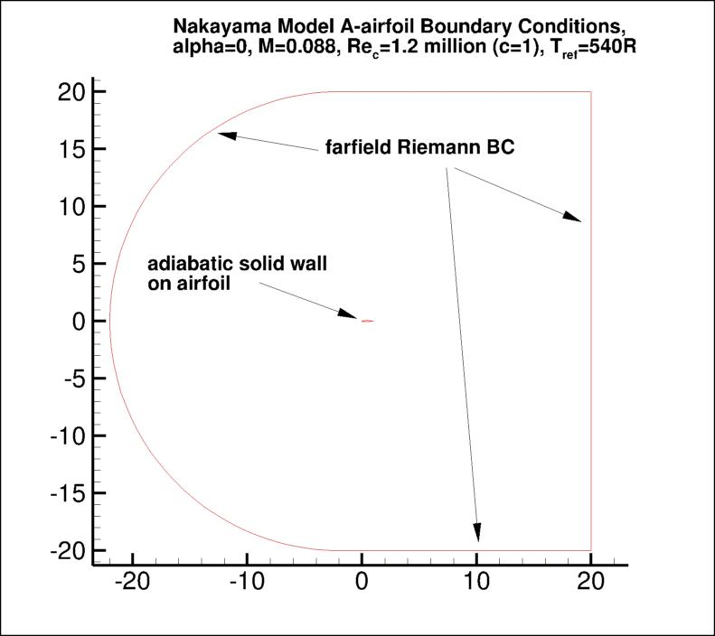

Public Access (formerly Langley Research Center)Turbulence Modeling Resource |
Return to: Turbulence Modeling Resource Home Page
2DANW: 2D Airfoil Near-Wake
The purpose here is to provide a
validation case for turbulence models. Unlike verification, which seeks to
establish that a model has been implemented correctly, validation compares
CFD results against data in an effort to establish a model's ability to
reproduce physics. A large sequence of nested grids of the same family are
provided here if desired. Data are also provided for comparison. For this
particular "essentially incompressible" airfoil wake case (from Nakayama),
the data are from an experiment.
This case is also given as a verification case at:
VERIF/2DANW: 2D Airfoil Near-Wake Verification.
IMPORTANT NOTE: This validation case uses grids that only extend 20c from the airfoil.
It was later discovered that this farfield grid extent is too small for verification purposes.
Therefore, any results using only 20c grid extent should be viewed WITH CAUTION.
The verification case using 500c grid extent can be found at the:
New official page for VERIF/2DANW.
The nominally 2D experiment utilized a non-symmetric 10%-thick conventional airfoil
(referred to as the "Model A-airfoil").
Wake characteristics were measured with the airfoil at 0 degrees angle-of-attack.
The Reynolds number was 1.2 million per airfoil chord.
Both the upper and lower boundary layers were tripped in the experiment (16%c upper surface and
5%c lower surface). However, in the CFD fully turbulent computations are performed
(this yields better results than forcing laminar flow upstream of the trip locations).
Also note that in the original airfoil definition from the experiment,
the trailing edge had a thickness of approximately
0.001c. The trailing edge definition was modified slightly so that the
airfoil closes at chord=1 with a sharp trailing edge instead.
The following plot shows the layout of the provided grids, along with typical boundary conditions.
(Note that particular variations of the BCs at the farfield boundaries
may also work and yield similar results for this problem.)

Some of the experimental data for this case are shown below.
Velocity and turbulence profiles of interest are chosen at the following x/c locations:
x/c=1.01, 1.05, 1.20, 1.40, 1.80, and 2.19.
The experimental data reference is: Nakayama, A., "Characteristics of the Flow around Conventional
and Supercritical Airfoils," J. Fluid Mech. (1985), Vol. 160, pp. 155-179,
https://doi.org/10.1017/S0022112085003433.
The airfoil is a DSMA661(MODEL A). The airfoil shape does not have an analytic definition,
and has a blunt trailing edge. This trailing edge has been altered to be sharp for the purposes of this study.
The experimental data used are provided here:
What to Expect:
(Other turbulence model results may be added in the future.)
Note that the OVERFLOW code has documented its results for this validation case (for the SA-noft2 and SST
turbulence models) in NAS Technical Paper 2016-01 (pdf file)
(18.3 MB) by Jespersen, Pulliam, and Childs.
Return to: Turbulence Modeling Resource Home Page
RESULTS
LINK TO EQUATIONS
MRR Level
SA
SA eqns
4
SSTm
SSTm eqns
3
SSG/LRR-RSM-w2012
SSG/LRR-RSM-w2012 eqns
3
Wilcox2006-klim-m
Wilcox2006-klim-m eqns
2
K-kL-MEAH2015m
K-kL-MEAH2015m eqns
3
EASMko2003-S
EASMko2003-S eqns
1
K-e-Rt
K-e-Rt eqns
1
Page Curators: Christopher Rumsey,
Ethan Vogel,
Clark Pederson
Last Updated: 03/11/2025